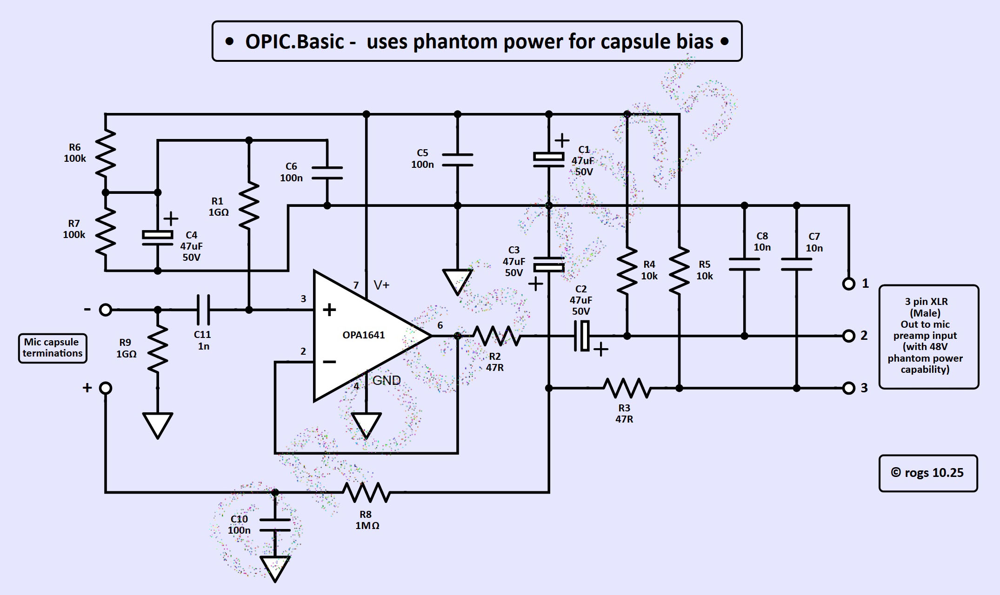
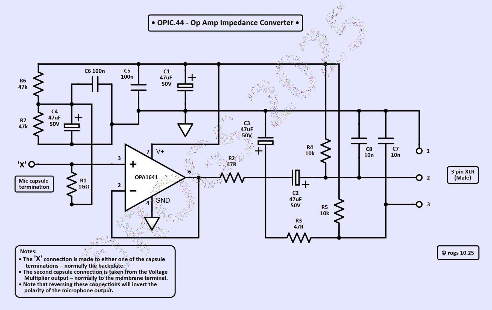
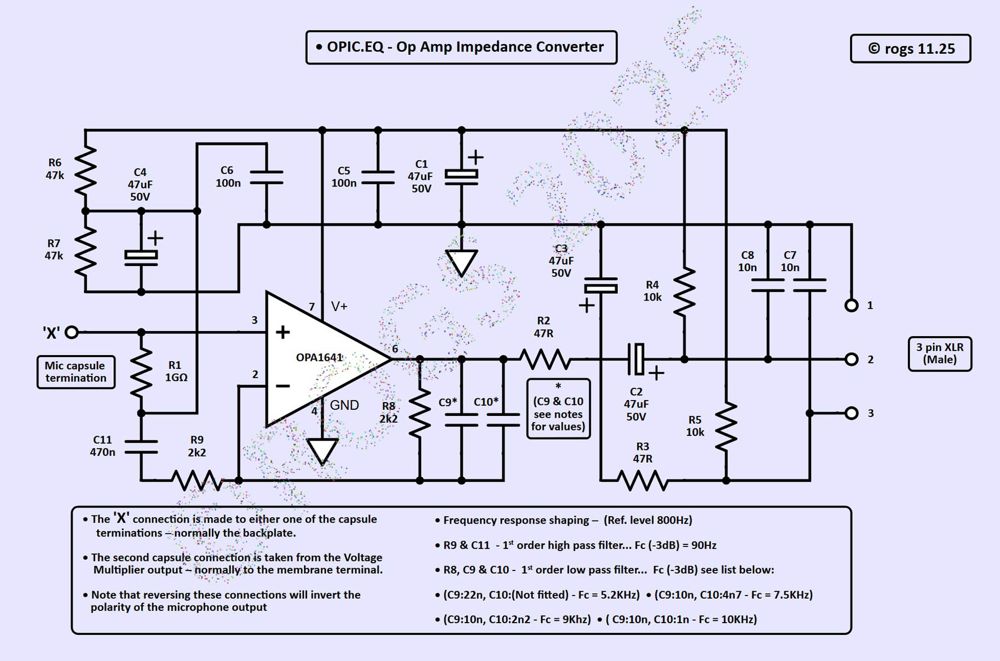
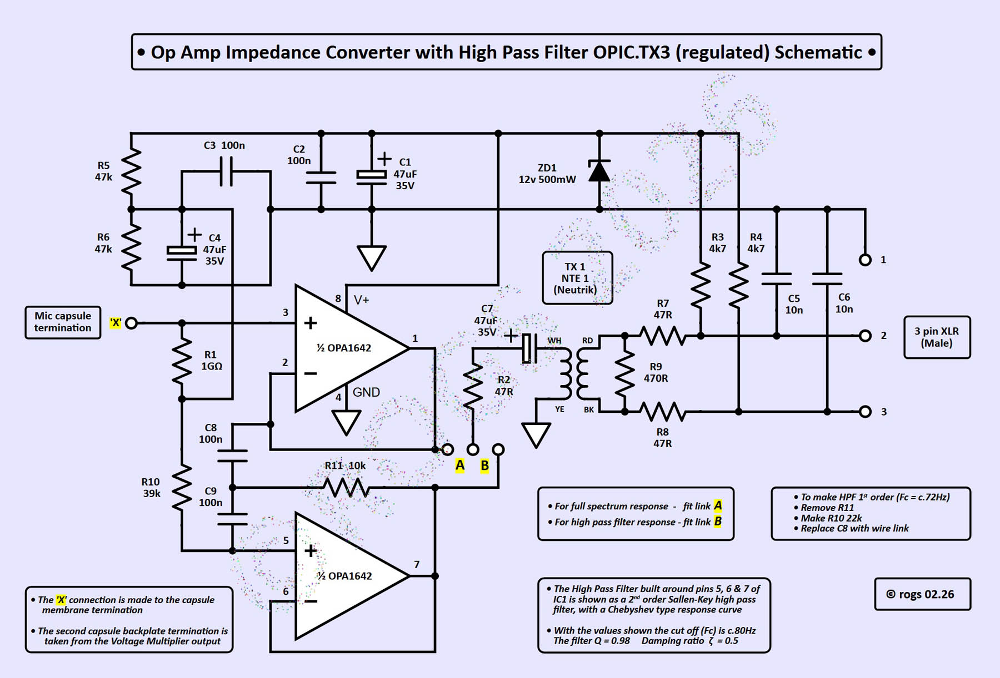
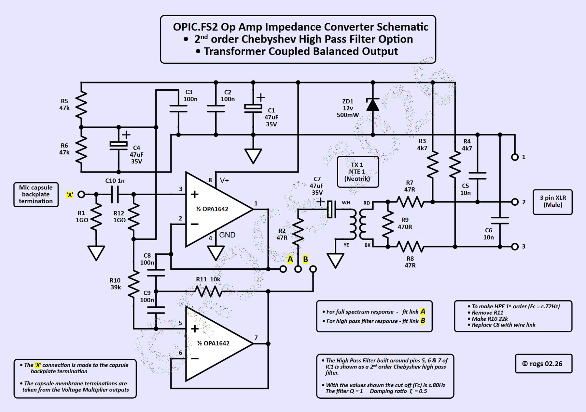

With this kind of hobby project, there will always be further ideas and revisions that develop as the project progresses. Listed here are some of the more recent project variations...
• These are the latest revisions of the 'new options'... You can access the complete PDF project notes of earlier OPIC versions by clicking on the appropriate project title at the bottom of this page •
It is possible to use an LDC capsule in a basic configuration, without fitting a separate voltage multiplier for capsule polarisation.
The sensitivity will be slightly reduced (by around 3dB) when compared to the same capsule biased with 60v of polarisaton.
The OPIC.Basic circuit shown below uses the 48v phantom power to supply c.30v to the op-amp circuitry.
In addition, the non audio leg (pin3) supplies c.40v as the capsule polarisation voltage.
As there is essentially no current drawn by that high impedance capsule 'load', the system remains impedance balanced...
It's a simpler version that works well!
• Just click on the image below for a PDF of the OPIC.Basic project details •

OPIC.44 is the latest version of the standard OPIC impedance converter and voltage multiplier schematic. It is functionally identical to the original version, but uses a Hartley Oscillator as the basis of the voltage multiplier, to make it simpler to construct (fewer bits!)...
• Just click on the image below for a PDF of the OPIC.44 project details •

This version of the OPIC project includes EQ. It is well known that many K.67 style LDC capsules - especially the cheaper Chinese 'clones' - can exhibit an exaggerated high frequency response at around 8 to 10KHz. To reduce the effect of that, the electronics in the microphone will sometimes include a first order low pass filter to attenuate higher frequencies. Whilst this will also affect frequencies above the high-mid 'peak' around 10KHz, this is often considered an acceptable trade off.
The OPIC.EQ version includes a 1st order low pass filter to help with this problem.
There is also the option for a high pass filter to be included, when it is considered useful to attenuate the extreme low frequency ambient response...
• Just click on the image below for a PDF of the OPIC.EQ project details •

• OPIC.TX3 is the latest issue of the transformer coupled versions of the OPIC project... This TX3 version includes a regulated op-amp DC supply, to enable more precise pad attenuation levels to be calibrated, regardless of variations in phantom power supplies ...
( You can find copies of earlier OPIC.TX project notes by clicking on the appropriate title at the bottom of this page ) •
• TX3 is a transformer coupled version of the original OPIC circuit, fitted with a Neutrik NTE 1 transformer on the output.
• The impedance converter is functionally identical to the other OPIC versions, but is fitted with a small transformer to provide a true balanced output in place of the single sided capacitively coupled standard OPIC output, which uses passive impedance balancing.
• The TX3 version also includes an optional Chebyshev 2nd order high pass filter, which may be configured from the positioning of a single link on the stripboard.
• That function could also be performed by a simple SPDT switch fitted externally, if required.
• The voltage multiplier employs the same Hartley oscillator configuration used in the famous 'Schoeps CMC5' schematic, to create a simple circuit with a low component count that can provide the required high value DC polarisation voltage for the microphone capsule.
• The TX3 version of this voltage multiplier also includes the option to add a 'pad' to the microphone circuitry, if required.
( The original OPIC concept provides for maximum output signal levels of up to +20dB, which essentially meant that any overloads were likely to occur in the following pre-amp, rather than in the mic itelf... The regulation of the op-amp DC supply at 12v in this TX3 version limits that headroom, but allows for more precise pad attenuation settings...
The addition of an output transformer also means that it is more likely that the mic sensitivity may need to be reduced when recording loud sound sources, to prevent the transformer core becoming saturated - especially at low frequencies - and possibly adding distortion. )
• This new pad arrangement is also activated via a simple link or SPDT switch. It can be adjusted to offer any depth of pad required, by simply adjusting an internal potentiometer, to allow a lower polarisation voltage to be applied to the capsule.
• The OPIC.TX3 version is intended to be fitted into a BM800 style body.
• Just click on the image below for a PDF of the OPIC.TX3 project details •

OPIC.FS2 is a version which incorporates all the 'extras' added to the project over the last couple of years...
• Designed to use a dual sided LDC capsule, and to fit into a U87 style donor body
• A transformer coupled balanced output
• An optional Chebyshev 2nd order high pass filter
• A three way pattern select option - Omni, Figure of 8 or Cardioid
• A selectable attenuation 'pad' option, the depth of which can be adjusted to suit individual requirements
These additional functions should expand the options available to those who enjoy experimenting with OPIC ideas !
• Just click on the image below for a PDF of the OPIC.FS2 project details •
